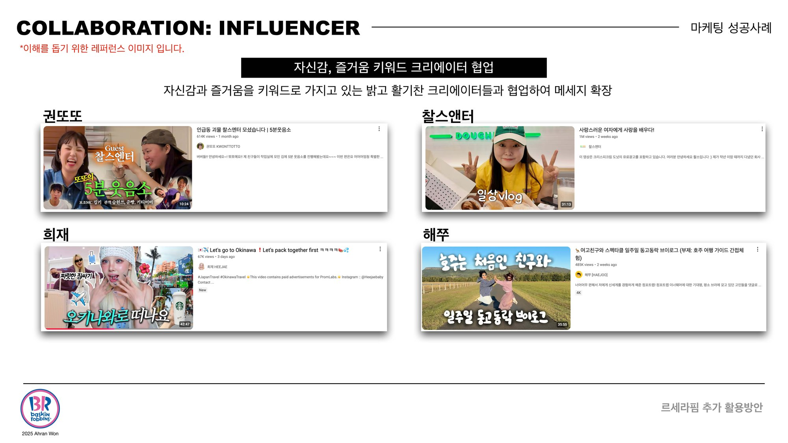
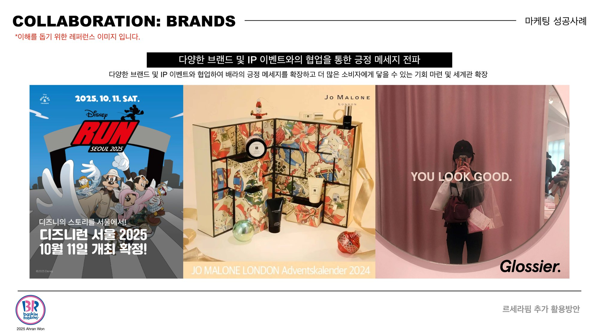
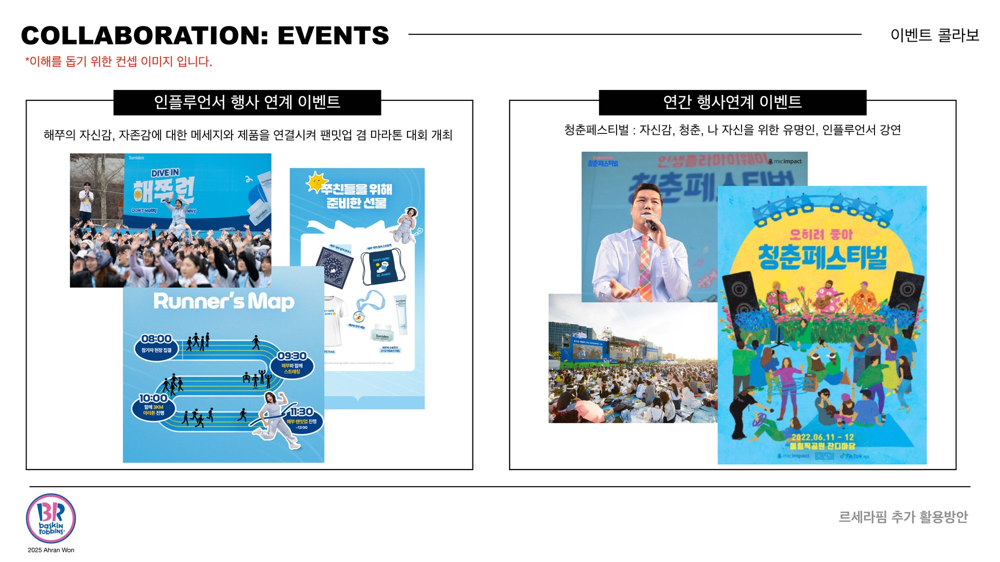
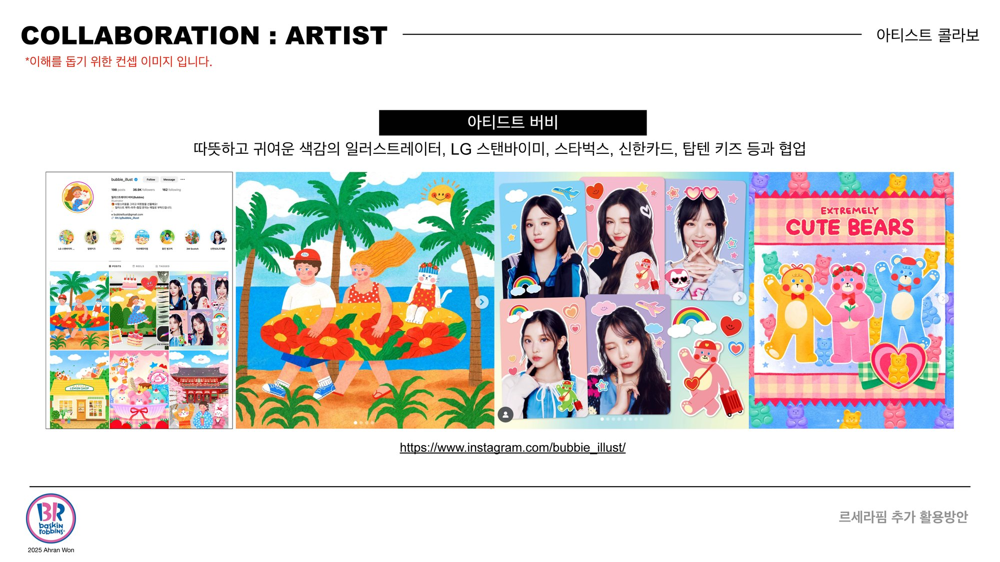
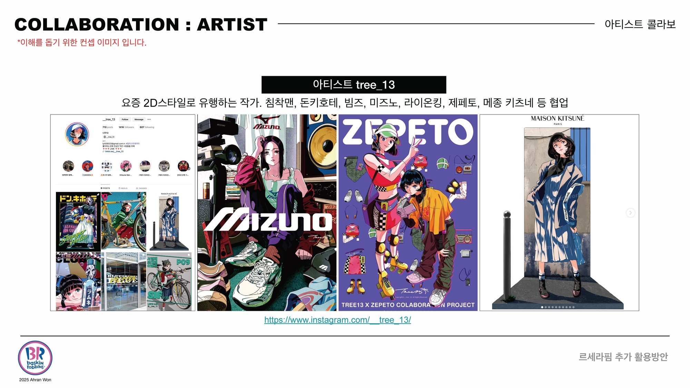
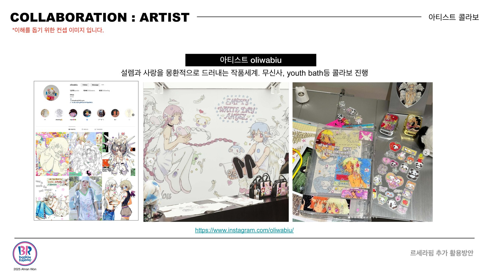
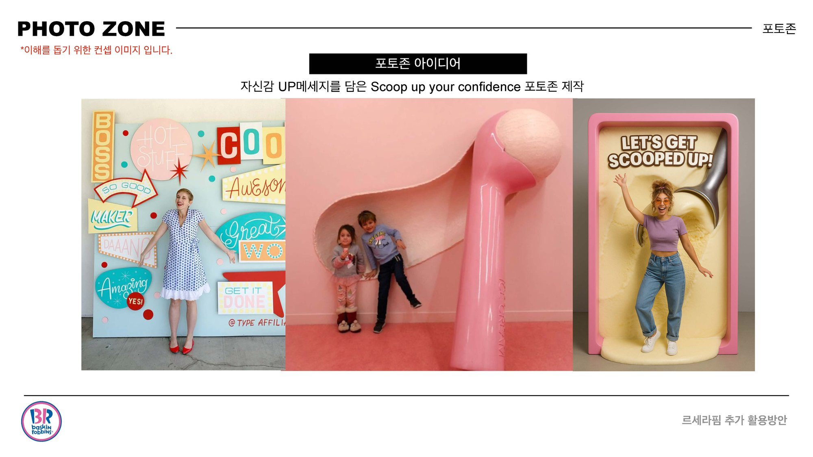
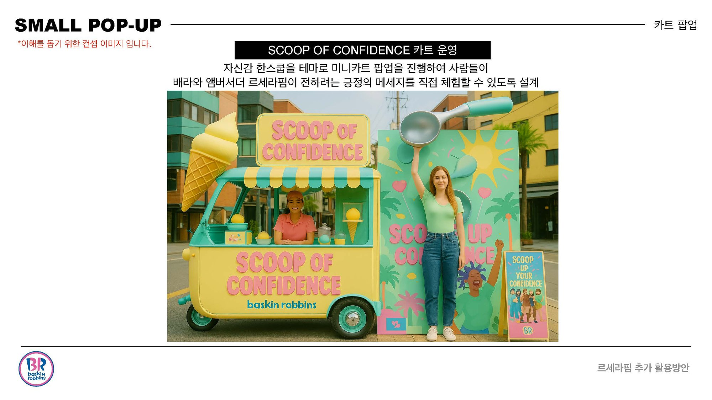
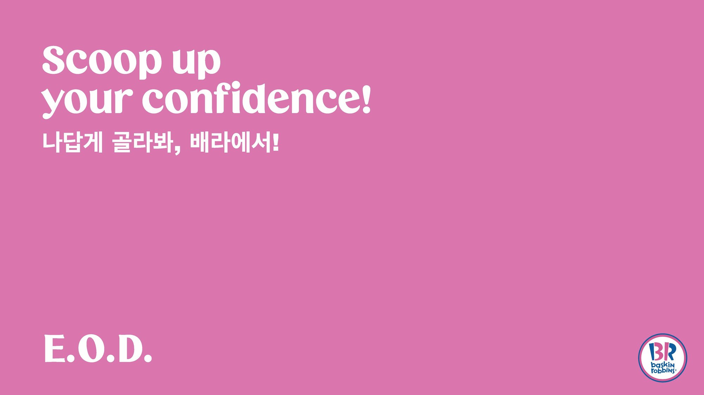

Scoop Up Your Confidence
A strategy proposal: what a dessert brand should say to a country running low on confidence.자신감이 바닥난 시장에서 디저트 브랜드는 무슨 말을 해야 하는가 — 전략 제안서.


- Client
- Baskin-Robbins Korea
- Location
- Seoul, Korea
- Year
- 2025
- Role
- Creative Marketing Team Lead
- Scope
- Brand strategy, 360 IMC proposal, visual direction, collaboration mapping
The brief started outside the category: a downgraded growth forecast, tariffs in the headlines, a generation being careful with money and with itself. Nike, Dove and Boots had already proved that confidence sells better than product.
From there, one line — Scoop up your confidence — extended across packaging, OTT, social, goods, nail polish, influencer and artist collaborations, a photo zone and a Scoop of Confidence truck.
카테고리 밖에서 출발했습니다. 성장률 하향, 관세 헤드라인, 돈과 자신에게 모두 조심스러워진 세대. 나이키와 도브, 부츠는 자신감이 제품보다 잘 팔린다는 걸 이미 증명했습니다.
그 한 줄을 패키지·OTT·소셜·굿즈·네일·인플루언서·아티스트 콜라보·포토존·푸드트럭까지 15개 이상의 접점으로 펼쳤습니다.
Proposal stage. Reference imagery belongs to the brands shown.제안 단계 자료입니다. 레퍼런스 이미지는 각 브랜드에 귀속됩니다.











A strategy is only as good as the number of places it survives.전략은 몇 개의 접점에서 살아남느냐로 증명됩니다.